Loot Price
Breve descrição: Um comparador de preços de jogos para PC com agentes de IA pode ser bastante útil e ainda abrir espaço para aplicar diversos conceitos de sistemas multiagentes, scraping, automação, IA e até gamificação.
🧠 Detalhes do projeto
Criar uma aplicação web ou desktop onde o usuário pode buscar por um jogo e receber uma comparação de preços entre diversas plataformas confiáveis (como Steam, Epic Games, GOG, Nuuvem, GreenManGaming etc.). O diferencial está no uso de agentes de IA autônomos que realizam periodicamente buscas, tratam os dados e alimentam um banco de dados para consulta em tempo real.
🔍 Funcionalidades
MVP (Produto Viável Mínimo):
- Busca por nome de jogo
- Listagem de preços em diferentes lojas
- Links diretos para as lojas
- Histórico de preços básico
Pós-MVP:
- Alertas personalizados de queda de preço
- Wishlist de jogos por usuário
- Notificações por e-mail/Telegram/Discord
- Integração com APIs de biblioteca de jogos (ex: Steam)
- Score de confiabilidade das lojas
- Análise de tendências de preço
- Recomendação inteligente de promoções
🧠 Sobre os Agentes de IA
Cada agente pode:
- Ser responsável por uma loja específica (modularidade)
- Rodar periodicamente (cron)
- Usar scraping ou APIs
- Validar a confiabilidade das informações
- Tratar promoções (ex: bundle, cupons, %)
🛠️ Stack Tecnológica
- Frontend: Next.js
- Backend: Node.js (Express)
- Banco de Dados: PostgreSQL
- Agentes de IA:
- Python + Scraping (requests + BeautifulSoup / Playwright)
- Langchain para processamento de linguagem natural
- Scrapy/Playwright/Requests + BeautifulSoup para scraping + Langchain
- Agendamento e Orquestração: Celery + Redis, Cronjobs, ou Apache Airflow
- Hospedagem: Vercel (frontend), Railway/Render/Heroku ou VPS
🗺️ Roadmap por Etapas
🔹 Fase 1 – Planejamento
- Definir as lojas que serão integradas (talvez lojas com +4.7⭐ no Trustpilot)
- Verificar se possuem API ou se será necessário scraping
- Mapear os atributos importantes: nome, preço, link, desconto, data
- Escolher stack inicial e arquitetura (mono repo, microserviços, etc.)
🔹 Fase 2 – Protótipo e Backend
- Criar estrutura de banco de dados
- Criar um scraper simples para 1 loja (ex: Steam)
- Desenvolver backend básico com endpoints REST ou GraphQL
- Criar um agente para realizar scraping e salvar no banco
- Documentar tudo em API
🔹 Fase 3 – Frontend
- Tela de busca
- Tela de resultados com comparação
- Tela de detalhes do jogo
- Sistema simples de favoritos/localstorage
🔹 Fase 4 – Multiagentes e Escalabilidade
- Implementar múltiplos agentes (um por loja)
- Orquestração de tarefas (agendamentos, reações a eventos)
- Sistema de logs, retries e confiabilidade
🔹 Fase 5 – Funcionalidades avançadas
- Alertas de preço
- Histórico de variação
- Login e personalização
- Dashboard pessoal
🧪 Possíveis Desafios Técnicos
- Rate limits das lojas
- Mudanças no layout das páginas
- Performance dos scrapers
- Sincronização entre agentes
- Validação e consistência dos dados
🌐 Exemplos de Lojas para Início

flowchart TD
subgraph Frontend ["Frontend (React)"]
A1[Interface de Busca]
A2[Listagem de Preços]
A3[Detalhes do Jogo]
end
subgraph Backend API ["Backend REST API (Node.js ou FastAPI)"]
B1[/"Endpoints públicos"/]
B2[/"Validação e autenticação (futuro)"/]
B3[/"Consulta ao Banco de Dados"/]
end
subgraph Agents ["Agentes de Coleta (Python)"]
C1[Agent - Steam]
C2[Agent - Epic Games]
C3[Agent - Nuuvem]
C4[Agent - GOG]
end
subgraph DB ["Banco de Dados (PostgreSQL)"]
D1[Tabela Jogos]
D2[Tabela Preços]
D3[Tabela Histórico]
end
subgraph Scheduler [Orquestração de Agentes]
E1[Cronjob / Airflow / Celery]
end
%% Ligações
A1 --> B1
A2 --> B1
A3 --> B1
B1 --> B3
B3 --> D1
B3 --> D2
B3 --> D3
E1 --> C1
E1 --> C2
E1 --> C3
E1 --> C4
C1 --> D1
C2 --> D1
C3 --> D1
C4 --> D1
C1 --> D2
C2 --> D2
C3 --> D2
C4 --> D2
Seguindo a arquitetura de microserviços, podemos dividir o projeto LootPrice em serviços independentes, cada um com sua responsabilidade, linguagem e stack mais adequada. Abaixo está a estrutura geral sugerida + bibliotecas para cada serviço.
🗂️ Estrutura de Diretórios - Microserviços
lootprice/
├── .gitignore
├── docker-compose.yml
├── README.md
├── docs/ # Documentação MkDocs
│ ├── mkdocs.yml
│ └── docs/
│ ├── index.md
│ └── architecture.md
│
├── frontend/ # Frontend com Next.js
│ ├── public/
│ ├── src/
│ │ ├── pages/
│ │ ├── components/
│ │ ├── services/
│ │ └── styles/
│ ├── next.config.js
│ ├── package.json
│ └── tsconfig.json
│
├── backend/
│ ├── api-gateway/ # Orquestrador de requisições
│ │ ├── src/
│ │ │ └── index.ts
│ │ ├── package.json
│ │ └── tsconfig.json
│ │
│ ├── auth-service/ # Serviço de autenticação
│ │ ├── src/
│ │ │ ├── controllers/
│ │ │ ├── routes/
│ │ │ ├── models/
│ │ │ └── index.ts
│ │ ├── package.json
│ │ └── tsconfig.json
│ │
│ ├── user-service/ # Gerencia usuários e preferências
│ │ ├── src/
│ │ │ ├── controllers/
│ │ │ ├── routes/
│ │ │ └── index.ts
│ │ ├── package.json
│ │ └── tsconfig.json
│ │
│ ├── price-tracker/ # Lógica de rastreamento e comparação de preços
│ │ ├── src/
│ │ │ ├── controllers/
│ │ │ ├── services/
│ │ │ ├── models/
│ │ │ └── index.ts
│ │ ├── package.json
│ │ └── tsconfig.json
│ │
│ ├── notification-service/ # Envio de notificações
│ │ ├── src/
│ │ │ ├── mailer/
│ │ │ ├── scheduler/
│ │ │ └── index.ts
│ │ ├── package.json
│ │ └── tsconfig.json
│ │
│ ├── scraper/ # Scraper com agentes em Python
│ │ ├── agents/
│ │ │ ├── steam_agent.py
│ │ │ ├── epic_agent.py
│ │ │ └── nuuvem_agent.py
│ │ ├── utils/
│ │ │ └── parser.py
│ │ ├── main.py
│ │ └── requirements.txt
│ │
│ └── database/ # Banco de dados (PostgreSQL)
│ └── init.sql
│
│
└── Dockerfile # Dockerfile principal (build multi-stage)
🔧 Stacks e Bibliotecas por Serviço
🔹 1. gateway-api/ (REST API para o frontend)
Linguagem: Node.js com Express
typescript– superset do JavaScriptjest– testesexpress– servidor webcors– habilitar CORSaxiosounode-fetch– requisições externaspg– conexão com o banco (Postgres)dotenv– variáveis de ambientejoiouzod– validação de dadosswagger-ui-express– documentação de APIprisma– ORM para PostgreSQL
🔹 2. scraper-agents/ (um por loja)
Linguagem: Python
Bibliotecas:
requestsouhttpx– chamadas HTTPbeautifulsoup4– parsing de HTMLplaywright– scraping avançado com JS dinâmicolxml– parser rápidopydantic– validação de dadossqlalchemy– banco de dadostenacity– retries automáticosloguru– logs simplificadosschedule– execução programada simples
→ Alternativa: usar Scrapy como framework completo de scraping.
🔹 3. scheduler/ (orquestrador dos agentes)
Linguagem: Python
Bibliotecas (dependendo da escolha):
Para algo simples:
schedule– cron-like em PythonAPScheduler– agendador de tarefas
Para algo escalável:
celery+redis– fila de tarefas distribuídaairflow– se quiser um DAG visual e mais controle
🔹 4. frontend/ (cliente web)
Linguagem: TypeScript (React)
Frameworks e libs:
next.jsjest– testesaxiosoufetch– chamadas à APItailwindcss– estilização modernareact-queryouswr– cache e fetch inteligentezustandouredux– estado global (opcional)chart.jsourecharts– histórico de preçosheroiconsouphosphor-icons– ícones
🔹 5. database/
PostgreSQL- banco de dados relacionalprisma- ORM (Node)docker- para local
🔹 6. notifications/ (alertas e comunicação)
Linguagem: Python
Bibliotecas:
smtplibouemail– e-mail SMTPrequests– Webhooks (Telegram, Discord)python-telegram-bot– integração diretasendgrid/mailgun– e-mails via API
☁️ Infraestrutura
- Docker para cada serviço (multi-container)
- Docker Compose para orquestração local
- GitHub Actions – CI/CD
- Railway / Render / Vercel para deploy rápido
- Monitoramento: Grafana + Prometheus (futuramente)
✅ Checklist para o Início
| Etapa | Status |
|---|---|
| Estrutura de diretórios criada | ✅ |
| Dockerfile + Compose básico | ✅ |
| API Gateway funcional | ⬜ |
| 1 Agente funcional (ex: Steam) | ⬜ |
| Scheduler inicial com Cron | ⬜ |
| Frontend inicial com busca | ⬜ |
| Banco de dados funcional | ⬜ |